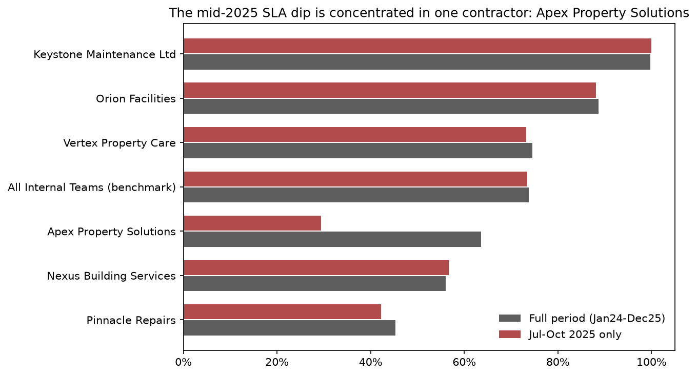

Business questionWhen Hearthstead orders its six external repair companies by the share of jobs completed on time, does that order stay the same after allowing for harder jobs?
Hearthstead is a fictional housing association. It uses its own maintenance teams and external repair companies, called contractors, to complete repairs for residents. I analysed 26,000 repairs to show which companies needed attention and whether the comparison between them was fair.
Every number below has been across the Excel workbook, SQL scripts and Python analysis.
They are six external companies paid by Hearthstead to complete some resident repairs. Other repairs are handled by Hearthstead's own maintenance teams.
Managers needed to know which companies delivered repairs on time, which needed support or contract review, and where residents were most at risk of poor service.
It simply means placing the six companies in order from highest to lowest based on the percentage of repairs completed within the agreed deadline. This is the on-time completion rate, also called the SLA compliance rate.
The companies said a simple comparison was unfair because some received more urgent or complex work. I therefore repeated the comparison after allowing for repair urgency, repair type and operating area.
The order does not change. All six companies remain in the same position after allowing for job difficulty. This makes the comparison useful as a starting point for management action—not as a verdict on its own.
Hearthstead first placed the six companies in order using only their on-time completion rates. I then repeated the comparison after allowing for differences in repair urgency, repair type and operating area. Every company stayed in the same position.
Pinnacle is not behind on only one score. It has the lowest share of repairs completed on time, the lowest share completed on the first visit, the highest missed-appointment rate and the slowest typical completion time. Four measures pointing in the same direction make this a stronger management concern.
Hearthstead's overall on-time rate fell between July and October 2025. That initially looked like a wider service problem. When the figures were separated by company, Apex accounted for most of the decline while the others stayed close to their usual level.
After excluding the incomplete final month, the share of repairs completed on time fell by 2.8 percentage points. This is a modest decline, but the statistical test suggests it is unlikely to be ordinary random variation. Much of it is connected to the Apex period above.
The first-visit completion measure appears to collapse in the final month. It is not a fair month to compare: the data was extracted before those newly reported repairs had enough time to receive an appointment or be completed. The separate on-time measure remained normal.
Keystone's reported on-time rate is far above every other external company and Hearthstead's own teams. The adjustment for job difficulty does not explain the gap. A result this unusual should be checked against the source system before it is used in a scorecard or contract decision.
When at least one contractor appointment was missed, the repair was less likely to meet its deadline and slow repairs took even longer. The relationship remains after allowing for urgency and repair type, although this analysis cannot prove the missed appointment caused the delay.
Managers were concerned that repeat or reworked repairs might be creating a large avoidable cost. They account for only a small share of spending. Cost is much more concentrated in roof leaks, boiler breakdowns, no hot water and no heating.
Hearthstead pays six external companies to complete some repairs for residents. Managers need to monitor those contracts so they can identify poor service, offer targeted support, challenge repeated underperformance and make better-informed renewal decisions. Comparing the companies helps management decide where to look first; it is not meant to replace investigation or professional judgement.
The starting comparison placed the six companies from highest to lowest using the percentage of repairs completed within the agreed deadline. The companies challenged that order because they did not all receive the same kinds of jobs. The rule for this project was therefore clear: do not rely on the simple order until it has been retested after allowing for job difficulty.
| Coverage | 4,000 properties, 6 external repair companies, 4 internal maintenance teams, 6 operating areas and 24 repair types |
|---|---|
| Period | January 2024 – December 2025 (24 months) |
| Properties | 4,000 |
| Repairs analysed | 26,000 (26,078 original rows; 78 duplicates removed during cleaning) |
| Appointments | 33,460 |
| Links to later repeat or rework jobs | 1,528 |
| Cost transactions | 53,270, adding up to £4,020,286.81 in total repair cost |
| Repairs still unfinished when the data was taken | 348 (346 fall in the final month — see Finding 5) |
Each tool had a clear job. The important figures were calculated more than once and checked to ensure they matched.
Most repairs finish quickly and cost a moderate amount, while a small number take much longer or cost much more. Those unusual jobs pull the average upwards. I therefore use the median—the middle repair when all repairs are placed in order—to describe a typical case.
A company handling more emergency or specialist repairs could appear worse even if the company itself was not the reason. I therefore adjusted each result for repair urgency, repair type and operating area. Analysts call this a . The table shows that the fairer adjustment barely changes the rates and does not change the order.
| Repair company | Simple on-time rate | On-time rate after allowing for job difficulty | Position before / after |
|---|---|---|---|
| Keystone Maintenance Ltd | 99.78% | 99.78% | 1 / 1 |
| Orion Facilities | 88.69% | 88.59% | 2 / 2 |
| Vertex Property Care | 74.59% | 74.47% | 3 / 3 |
| Apex Property Solutions | 63.56% | 63.37% | 4 / 4 |
| Nexus Building Services | 56.03% | 57.22% | 5 / 5 |
| Pinnacle Repairs | 45.26% | 45.09% | 6 / 6 |
Conclusion: Keystone stays 1st, Pinnacle stays 6th and every other company keeps its original position. Job mix does not explain the large performance differences in this dataset.
“Completed on the first visit” can be overstated if a resident later reports that the same repair needed more work. I compared the recorded first-visit result with a stricter version that checks later repeat and rework records.
Hearthstead's overall on-time rate fell for four consecutive months from July to October 2025. Separating the figures by repair company showed that Apex fell sharply during exactly this period, while the other companies remained close to their usual performance.

Instead of applying a general cost-cutting target, Hearthstead can focus investigation on the repair types where spending is most concentrated.
The source files below contain the workbook, queries, Python analysis and Power BI build specification. They all reproduce or reconcile to the figures shown on this page. The files are not yet in a public project repository.
See also: 08_outputs/executive_summary/ for the full written analysis and 09_case_study/portfolio_case_study.md for the source of this page.